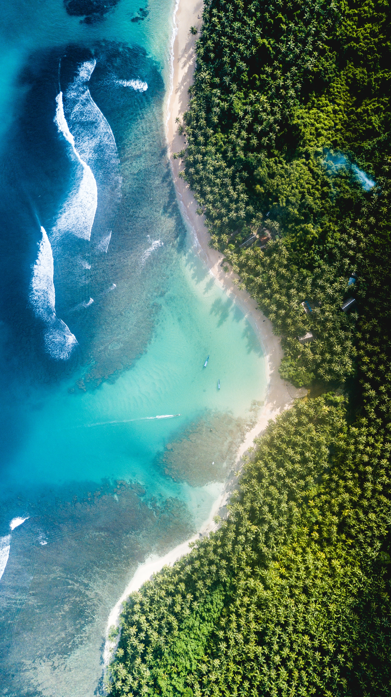

Here is the video I made of my Cebu trip that Mary and I went on this past February, which we literally booked our flights and hotel for just 2 days before we actually left. Yes, it was a quick and spontaneous decision. We didn't have any specific plans for this trip but it turned out to be the best. We spent 3 whole days doing nothing but swimming, chilling under the palm trees, drinking so much coconut water, riding bikes along the beach, and trying out a stand-up paddling board. It was so relaxing, refreshing, and fun! 🌴🦎👙🏊♀️🚲🍺🍽😊

The lesson we learned from this trip was that we need to give ourselves a break from time to time, especially when there are many things going on in life. Being spontaneous is a good thing sometimes, because you never know what adventures await you along the way.
.And I've also been enjoying video editing. It reminds me of all the good times I had that time. Anyway, hope you guys enjoy watching!:)